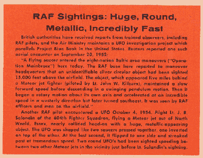
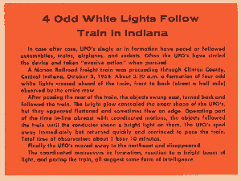

"By leading UFO authorities, including - Maj. Donald E. Keyhoe,
Director, National
Investigations Committee on Aerial Phenomena
Exclusive Project Blue Book Sighting Photos From U.S. Air Force Files
Compiled by the Editors of TRUE after 17 years of exhaustive research."
On this page I will be gathering all the small inset stories and commentaries which are scattered throughout the
issue.
I am concentrating more on the larger articles, so I am only adding these as time allows, in no particular
order. But do check back often as there are more than 25 of them.
After midnight, near Damon in Brazoria County, the two sheriffs sighted an enormous flying object from their patrol car. In the bright moonlight, they could see it was about 200 feet long, 40-50 feet thick at the center, tapering at both ends. It had a brilliant purplelight at one end, a fainter blue one at the other.
Sheriff Goode turned the patrol car around, drove back three-fourths of a mile and stopped. As they were watching through binoculars, the strange craft came down to 100 feet, heading rapidly toward the lighted police car. In the moonlight, the UFO cast a huge shadow on the ground, and the officers could see it moving swiftly toward the highway.
As it neared them, the brilliant purple light illuminated the ground and the inside of the car. Sheriff Goode, leaning out the driver's side, suddenly felt heat from the approaching UFO. He hastily started the engine. By this time the huge flying object was barely 50 yards away.
With understandable panic, the sheriffs fled.
"We were traveling at speeds up to 110 miles an hour," McCoy told the air force.
When they reached Damon, the lawmen calmed down and decided to go back.
"We were both scared," McCoy frankly admits. "But we wanted to find out what it was."
But when they returned to the area, the UFO's lights began to shift just as they had before its swift approach. Again, the sheriffs raced away.
"We figured the object would start coming toward us again," McCoy said in his AF statement. In describing the UFO, he said the body appeared dark gray. There was no sound, nor any trail visible.
"I never saw anything like it before," McCoy concluded. Both sheriffs admitted they had not believed in UFO's before.
"I've always been skeptical about these things," said McCoy. "I'm not a skeptic anymore."

British authorities have received reports from trained observers, including RAF pilots, and the Air Ministry maintains a UFO investigation project which parallels Project Blue Book in the United states. Reuters reported one such aerial encounter on September 20, 1952:
"A flying saucer entered the eight-nation Baltic area maneuver headquarters that an unidentifiable silver circular object had been sighted 15,000 feet above the airfield. The object, which appeared five miles behind a Meteor jet fighter (piloted by Lt. John W. Kilburn), maintained a slow forward speed before descending in a swinging pendulum motion. Then it began a rotary motion about its own axis and accelerated at an incredible speed in a westerly direction but later turned southeast. It was seen by RAF officers and men on the airfield."
Another RAF pilot encountered a UFO October 4, 1954. Flight Lt. J. R. Salandin of the 604th Fighter Squadron, flying
a Meteor jet out of North Weald, Essex, nearly collided head-on with a huge, metallic-appearing object. The UFO was
shaped like two saucers pressed together, one inverted on top of the other. At the last second, it flipped to one side
and streaked past a tremendous speed. Two round UFO's had been sighted speeding between two other Meteor jets in the
vincinity just before Lt. Salandin's sighting.
"I have been flying since 1942 both day and night," he stated, "and currently own a flying business that requires us
to fly day or night in all types of weather. Over the years I have seen many falling stars and other phenomena
associated with atmospheric conditions as well.
What we saw was not an astronomical or meteorological phenomenon."
On the first night, over northwest Akron, Stadvec and two passengers spotted a brilliant green and white light apparently suspended to the right of the plane, about 10:15 p.m.
"The object we saw dived at us on a collision course to the extent that I actually called out to my passengers that the object was going to ram us," Stadvec said. "After the object came at us it reversed course and climbed rapidly into a clear night sky."
And he continued: "This happened again the next night (about the same time) when the object flashed up from in front of us and again climbed into a clear sky. In both instances, the object climbed at tremendous speeds, leveled off and dissappeared to the northwest."
On the second night about the time of the sighting, radar at Cleveland Hopkins airport detected a meteor-like object, which flared up on the screen and faded out within a few minutes.

Canadian Pacific Airlines Flight 421, en route from Lima, Peru, to Mexico City on the night of December 29, 1966 was paced by a strange object which the six-man crew was later unable to explain as anything but a UFO. "I think it was something other than normal," said the pilot, Captain Robert Millbank, a 26-year veteran.
Capt. Millbank was flying the DC-8 northwest along the Peruvian coast at 35,000 feet, with a full moon brightening the clear night sky. At a position south of the equator two twinkling white lights were observed close together on the horizon, to the left of the nose of the airplane. The lights arced toward the plane, separating as they did so, brightened, and descended. Two thin beams of light shining upward in a V-pattern emanated from the lights themselves.
At the altitude of the DC-8 the lights leveled off, taking position beyond the left wing. By this time, the entire crew was watching the UFO through as many windows as possible to rule out reflections. The UFO's shape was indistinct, but it appeared to be thicker in the center (possibly a disc). At closer range, a string of yellow lights became visable on the edge of the object, between the two large lights.
For two minutes, the UFO stayed in position off the wing, once emitting a shower of sparks like fireworks. Then it disappeared behind the plane. It had been in view for 7 minutes in all.
Debating whether the thing could have been a bright fireball, another aircraft, or a satellite re-entry, the crew
tried hard to dismiss the object as one of these, but without success. The duration, performance and appearance could
not be explained.
On the night of Aug. 8, 1965, James Lucci, son of a professional photographer for the Air National Guard, was making time exposures of the moon near his home in Brighton Township, Beaver County, Pa. With James, a high school senior, was his brother John, 20. A third witness, Michael Grove, saw the UFO from his home across the road.
About 11:30, as James started another exposure, a round, thick object, glowing brighter than the moon, approached above the trees at the left. Realizing the camera must have caught it, James closed the shutter and quickly wound the film for another shot, for the slow-moving UFO was then only about a quarter of a mile away. Before he could get a third picture the strange device climbed steeply out of sight, its swift ascent also seen by Michael Grove.
(Later, the AF admitted to the press that a UFO was reported about this time, near Pittsburgh. Whether it was the same one, seen before or after the 11:30 sighting, is not known as the AF refused to give details.)
At first, fearing ridicule, the Luccis avoided publicity. After two days, friends persuaded them to show the pictures to the Beaver County Times.The newspaper's three photographers superimposed the negatives and made other tests which showed the UFO had slowly moved closer, left to right, as described. After a full evaluation, they labeled the photos genuine. This was later confirmed by NICAP Photographic Adviser Ralph Rankow.
According to the Luccis, the disc appeared "larger than a Piper Cub airplane."
When the Times story broke, the negatives were quickly obtained for NICAP analysis by William B. Weitzel, Chairman, Pittsburgh-NICAP Subcommittee. Aided by the Times staff, Weitzel and Subcommittee member Rober Brown spent five days cross-examining the witnesses, checking the photos against aerial and contour maps, and recording technical photographic evidence. The Times editors gave them this statement:
"To the best of our knowledge, and in our considered judgement, the negatives are not the results of photographic or physical faking...nor is the UFO image thereon the result of any photographic accident such as reflections...lens flare...developer bubbles and the like...and solid image appears to be the result of photographing a self-luminous object positioned in the field of view of the camera."
In official public statements, Argentina and Chile have solidly nailed down the existence of UFO color pictures taken at their Antarctic scientific stations. Adding to earlier press stories, the Secretary of the Argentina Navy confirmed these details:
On July 3, 1965, a giant lens-shaped flying object was seen, tracked and photographed at the Argentina scientific base, Deception Island, in the Antarctic. Lt. Daniel Perisse, C.O., confirmed by radio that the large UFO alternately hovered, then accelerated and maneuvered at tremendous speeds. While being tracked by theodolite and watched through binoculars, the unknown object caused strong interference with variometers used to measure the earth's magnetic field, and also registered on magnetograph tapes. Color pictures were taken through a theodolite by a member of a visiting group from the Chilean scientific base.
Also confirming these points, the Chilean Minister of Defense at Santiago added new information radioed by Cdr. Mario Janh Barrera, C.O. of the Chilean base: On June 18, a similar UFO had maneuvered over the area, seen by all personnel. During the July 3 sighting, the strange object had caused strong radio interference, temporarily blocking his attempts to report the UFO to the English and Argentina bases

A Monon Railroad freight train was proceeding through Clinton County, Central Indiana, October 3, 1958. About 3:10 a.m. a formation of four odd white lights crossed ahead of the train, front to back (about a half mile) observed by the entire crew.
After passing the rear of the train, the objects swung east, turned back and followed the train. The bright glow concealed the exact shape of the UFO's, but they appeared flattened and sometimes flew on edge. Operating part of the time in-line abreast with coordinated motions, the objects followed the train until the conductor shone a bright light on them. The UFO's sped away immediately but returned quickly and continued to pace the train. Total time of observation: about 1 hour 10 minutes.
Finally the UFO's moved away to the northeast and disappeared.
The coordinated maneuvers in formation, reaction to a bright beam of light, and pacing the train, all suggest some form of intelligence